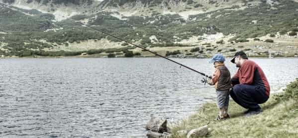

One Englishman promoting the great libertarian values and sociobiological qualities of the West. Visit my page, That Libertarian Chap, here - https://www.facebook.com/thatlibertarianchap


At a time when many Western men don’t even want to be a father, it may be considered out of touch to discuss the importance of pursuing its excellence. Moreover, my eldest of three children is not even five yet, so I must also contend with the accusation of pretence. But, I am an early years professional and the facts paint a clear picture that we can all recognise – we need the return of traditional families and patriarchy.
Now, don’t expect the cultural Marxist establishment to help you out; the glue which holds the suicidal fragments of today’s status quo together is their hatred of straight white men; you think they want more of you? Yet, the demographic Winter is coming, the signs are all there – Europeans breeding way below replacement levels, a runaway Keynesian economy, the ageing of the higher spending generation etc. etc. Your example as a father could stave off the worst of it for Western civilization.
So, now that I have your attention, how can you be a good dad? Before we begin, self-reflection has been a precursor for obtaining wisdom in the rationalistic West since the age of heroes. It wasn’t only the Greeks who had inscribed, ‘Know thyself’, at the forecourt of their temples. What are your strengths and weaknesses? Are you cold and unempathetic around children and teens? Would you be exhausted after five minutes alone with them? None of these are impediments to fatherhood but you need to know what you can offer and what will take more practice.

You may likely have children that are similar to you or your wife and who are perfectly happy engaging in the activities you are, but they might be different, very different to anyone else. Once you know the tools you are working with and the nature of the child you are working on, reaching the level of Gong fu in the art of fatherhood only requires good planning and flexibility. I would advise using Maslow’s hierarchy of needs, a mainstay for early years educators, to create an action plan.
You remember the film Gremlins? There were three rules. Children are much easier – don’t feed them after midnight is the only one of the three that applies. Air, food, water, clothing and shelter; if you’re unable to provide these things in a developed country, that’s probably because you are a child. Make sure everyone gets enough time outdoors, fruit and veg, and sleep – job done.
Just keep everything up to waist height safe for their first three years (especially plug sockets and furniture corners). After that, accidents become a healthy part of their development; let them learn to risk assess for themselves. If they don’t graze those knees and bump those heads, nature won’t go easy on their retarded sense of caution.
On a serious note, don’t harm your little ones out of anger. Punishment must always be handled as a matter of justice. As a father, you are the judge and the majority of studies have shown that disproportionate punishment, physical aggression and angry emotional outbursts have very damaging effects on human development. Not only will the child not learn about honour and justice, they will be much less able to control their temper and handle emotional situations with rationale for the rest of their lives. They will also pass on the same IQ-depleting, animalistic behaviour to their children and so the vicious cycle continues. Revenge is a dish best served cold.
But, be warned! Children will drive you up the wall sometimes, just as the weaker sex often resorts to hurtful words, emotionally bullying us to do their will. Children have little to no baggage and are raw human emotion and instinct; as such, they can intuit and manipulate yours with ease, if you are suggestible enough, pointing out hypocrisies and pressing all the right buttons. You have to be as steel with them, cold and immovable, but when they genuinely need comfort, recognise it and open your heart to them. This way, they learn what good parenting looks like and the importance of being earnest, not just how to become a better liar for next time.
What’s the best way to keep your own temper at bay? Financial security is the biggest cause of arguments and divorces etc., and the pressure is placed on the shoulders of men first, as the traditional hunter of the hunter-gatherers. Live within your means and try not to worry. Contrary to popular belief, children don’t really need a lot and their education doesn’t have to be too expensive if you’re willing and able to spend more time with them yourself. Also, not every single person has to go to university and come out with debt and a useless degree. See this article for more on how to take control of your finances.
Not to speak ill of homeschoolers, but letting your child out of the home to develop their own social groupings is just as important as the love they receive in the home. It is the other edge to the sword that is your child’s social ability. If both are not kept sharp, then your child will be at a disadvantage in the real world.
Yes, out there, there are meanies who do not love and understand your child the way mumsy does, but that’s the whole point. Iron sharpens iron and your child will need to learn the different characters and personalities out there, who they want to befriend, who they want to avoid and why.
We all need to belong to something. That’s why even the most individualistic of libertarians will nevertheless join various groups and institutions. Alexis de Tocqueville thought the success of the American Republic as compared with the French was the churches which, although numerous in their denominations, bound the spirit of the Americans together across the country.
There’s a reason that cultural and ethnic homogeneity are so crucial in the creation of high trust societies. So, as a father, you have a duty to make sure your child grows up somewhere they belong in this most primal of ways. If having children doesn’t give you the incentive to take an interest in politics and the society your child must inherit, I don’t know what will.
As far as love in the home goes, you don’t have to be gushing with emotion to let them know you love them. Routine, structure and stability are the greatest tokens of love for a child. Superficially, we can say that accepting them for who they are and kissing them goodnight are good, but shaming them for being different to their brothers and sisters is bad. Of course. But, taking time for your children is at the heart of the matter.
Set times every week for family meetings, eat meals at least once a day together as a family with no distractions and have a board game evening, for instance. Make the home something that you are all collectively invested in and your child will know deep down that you want to be invested in them. Creating that platform gives them the space in which they can speak honestly with you about your parenting and to genuinely listen to your parental wisdom in return.
I’m at risk of repeating myself here. That’s because children need to be out of the home and in an environment where they are not unconditionally loved in order to find out how they can earn the esteem of their peers and elders, as well as whose opinions don’t matter to them at all. But, learn the mistake of the pushy parents who raise those over-competitive, ticking time-bombs we’ve all encountered. Studies show they’re more likely to reject you later in life and less likely to achieve a sense of fulfilment. Which leads us to self-actualisation.
We all want our children to reach their fullest potential but, the trouble is, most of us are not really engaged in that task ourselves. Generally speaking, however, we want our children to succeed at something they love. The best way to do this is to understand what they’re good at and play to their strengths, whilst supporting them in their weak areas.

For example, if yours are still young, study them to see what schemas they have. Schemas are the following psychological urges developed from their first year: Rotation, Trajectory, Enveloping, Orientation, Positioning, Connection, Enclosure/Container, Transporting and Transformation. Once you’ve got them sussed, thinking of toy ideas and study supports is much easier.
But, let’s be honest, if your child isn’t good at science, they probably won’t be an astrophysicist and probably won’t want to, but that doesn’t mean they shouldn’t know how gravity works. If your child has a talent and they love a certain hobby, focus their energies on it and help them to excel; chances are, none of you will regret it or resent the other.
Interestingly, Maslow later revised self-actualisation. He thought that self-actualisation was aimless and without any end in sight, without some higher, transcendent goal. In the West, we have lost the concept of the paterfamilias, the father as being both priest and king of the household, with the hearth keeping both the fire and name of the family alive, surrounded by statues and images of ancestors. The fireplace has been replaced by the television in most of our homes and the father has been replaced by the state in many more still.
As the priest of your family unit, your natural role is to act as a spiritual guide for your children, to the best of your knowledge and belief. Teach them the ways of your ancestors, about their culture and their role in the bigger picture. Teach them how to search within and without for answers, and how to respectfully disagree, so they do not end up mindlessly following authority.
In short, being a father is never going to be easy. Then again, nothing worth having ever is. Become what you were born to be. But, if you’re going to do it, do it right. You don’t have to be the perfect father, you just have to keep at it. All cheesy cliches, yes, but that’s because these principles are time-honoured, tested and true. Let’s keep it that way.
Read More: 5 Things I Learned From Becoming A Father